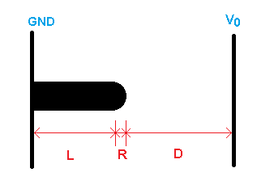
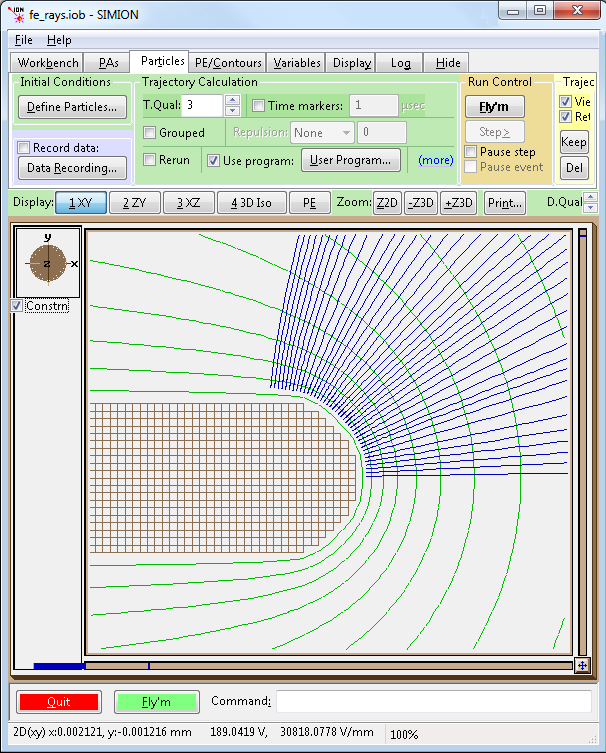
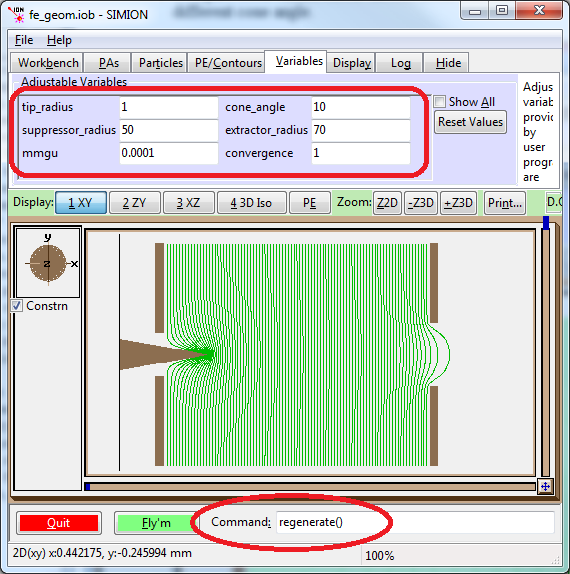
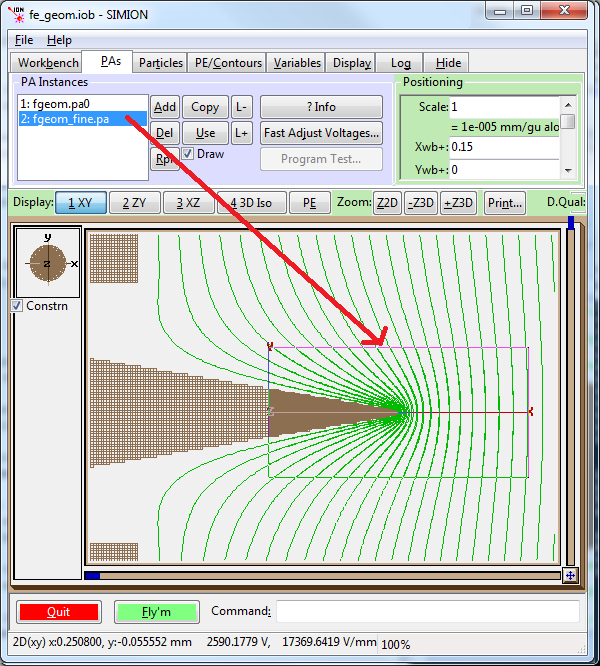
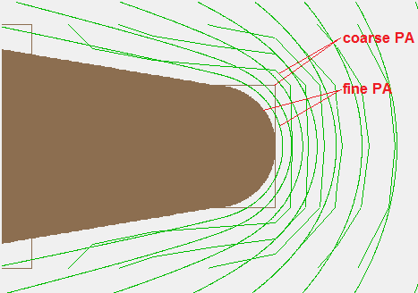

Purpose
This example demonstrates solving field emission (FE) problems, both in terms of calculating the electric field of a field emission cathode system and calculating the particle trajectories emitted from a field emission cathode surface. See Doc(Field Emission) if you aren't familiar with field emission.
Field emission poses a couple challenges in simulation. Field emission typically involves a significant difference in geometric scale between the tiny field emission cathode and the large surrounding space; moreover, the fields over the tiny cathode surface must be computed accurately because these determine cathode emission currents (by the Fowler-Nordheim equations). This can require a PA with a large number of points or resorting to special techniques to reduce memory usage and computation time (e.g. nested coarse and fine PA's). Furthermore, if doing ray tracing, we also need to set up particle definitions with their currents being a function of the field magnitude near the cathode surface.
Geometry
The "fe_rays.iob" example simulates the system illustrated below:

Figure 1: Field emitter with hemispherical tip attached to a nanotube post, attached to base plate (all grounded). An anode on the right is held at voltage V0. This system has 2D cylindrical symmetry, with the tube on the axis.
The field enhancement factor γ is here defined as the ratio of the field near cathode surface to D/V0. A number of estimates for γ in this system are given in [2], such as γ = 1.2 (3.15 + (L/R))0.9.
Simulation Notes
PA size and field accuracy concerns: One challenge in field emission problems is that they typically involve a significant difference in geometric scale between the tiny field emission cathode and the large surrounding space; moreover, the fields over the cathode surface must be computed accurately because these determine cathode emission currents (by the Fowler-Nordheim equations). Simulating this can therefore require a PA with a large number of grid points (high grid point density) to obtain sufficient accuracy of fields near the tiny cathode tip. A typical result of using PA grid cells that are too big is that the field near the cathode tip surface will be distorted in shape; the field will also tend to be lower than expected since strong field curvatures basically become "blurred" when modeled as a single grid cell. Therefore, a full field emission system might only be possible to model as a 2D array. For 3D, it can still be possible if you break the system into nested coarse and fine PAs as discussed in the "Multiple PAs" section below.
Setting currents over field emission cathode surfaces: The emission current from each point on the cathode surface depends on the electric field at that point (by Fowler-Nordheim equations). We can therefore use SIMION to refine a PA, measure the fields near a cathode surface, and use those fields to set up emission currents from the cathode surface. Much of the hard work for this has been done for you via a reusable library (cathodelib.lua), whose use is demonstrated in the fe_rays.iob example. This library can be conveniently called from code inside a FLY2 file. Basic usage is as follows. The first task that needs to be done is to determine where the cathode surface is and select a number of points on that surface to emit rays of current from. Then fields can be measured at just above those points on the cathode surface. For each point, a ray current can be computed from that field using a Fowler-Nordheim equation. Finally, a ray can be defined in the FLY2 file with the computed current, required position, and a small initial velocity normal to that cathode surface.
Determining the points on the cathode surface is complicated by the fact that the cathode shape, if it is curved, is somewhat distorted when represented as a PA (rectilinear grid). The square grid cells approximating the curved surface could even extend outside the theoretical surface and splat particles before they are created, unless you disable splats with ion_splat = 0 or start flying particles slightly outside the electrode surface (which we do here). You could specify the cathode shape explicitly via an equation, or even infer it from the original GEM file, and then place particles some fixed distance away from the theoretical surface. The cathodelib library offers another potentially more convenient approach. If you specify a single point just above the cathode surface, cathodelib will measure the potential at that point and use the equipotential surface at that point as the surface to emit from. Unlike the jagged electrode surface, the equipotential surface is fairly smooth 1-2 grid units away from the surface. cathodelib provides a function (walk_cathode) that will walk along an equipotential line in the XY plane and provide you equidistant points along that line. At each point, you are also provided a surface normal vector (which you can use for the direction of your ray velocity) and a surface area for that segment, assuming cylindrical symmetry (which you can multiply by the current density to obtain the current for the ray). You may wish to adjust your particles' initial KE to take into account the fact that particle tracing is not starting at ground (see the "+ V" in fe_rays.fly2). Time-of-birth (TOB) might also adjusted for.
Measuring surface fields: The measurement of electric fields near cathode surfaces is performed (by cathodelib.lua) in an automated way via the SIMION 8.1 PA API (simion.pas) (eg. pa:field_vc function). Distortions of electric fields near jagged electrode surfaces in PA's can be reduced by measuring fields a slight difference away from electrode surfaces though still as close as possible (e.g. 1-2 grid units).
Deriving ray currents from fields:
Your FLY2 file can define ray current densities using the information
it receives from cathodelib about electric fields.
Although you can define whatever relationship you want, typically this would be
done via a Fowler-Nordheim equation.
There are a number of variants of these equations, but one of the simpler
ones is implemented in the function fn_current_density provided
by cathodelib.
You may wish to implement your own such function though.
One parameter the Fowler-Nordheim equations depend on is the work function of the
cathode material.
Assigning currents: You can express currents either in terms of the number of particles emitted from a segment of cathode surface or by assigning charge weighting factors (CWF) to particles emitted from the surface. See Doc(Monte Carlo Simulation) for details. The latter approach is chosen here. The cathodelib currently assumes that the cathode and its emission have 2D cylindrical symmetry, with no azimuthal energies, so it only traces particles in the Y > 0 region of the XY plane. It also weights the CWF's by the area of the surface of revolution for the segment the particle is emitted from (via the cathodelib cone_area function). The result is shown in the below figure:

Figure 2: 2D zoom of curved tip of field emission cathode, with equipotential contours (green) and rays of current (blue). Ray starting positions are automatically placed on an equipotential surface just above the cathode surface.
Changes to the FLY2 definition: Code invoking cathodelib.lua from a FLY2 file must be entered by hand into the FLY2 file via a text editor. Special programming logic like this is not really accessible from the GUI. Moreover, be careful not to save such a special FLY2 file from the GUI (e.g. when saving the IOB) since this will overwrite the FLY2 file and lose this logic. Any changes to the cathode properties or the electrode voltages will require reloading the FLY2 file in order to regenerate the particle definitions in memory. This can be done by the Load button on the Particles Define screen. It can also be invoked automatically at the beginning of the Fly'm by a special function in the workbench user program (as fe_rays.lua does). It is also possible to pass variables between the FLY2 file and Lua program, such as having adjustable variables in the Lua program control parameters in the FLY2 file and returning the total current in the FLY2 file back to the user program. See fe_rays.lua and fe_rays.fly2 for how to do this (or see Example: random_fly2 for a much simpler example of the technique). The fe_rays.lua defines adjustable variables you can control via the Variables tab, and this includes emission properties such as the work function, the length of the emission region on the cathode, the number of rays to emit from the cathode, and the location of the equipotential contour to emit rays from (specified as an on-axis distance from the cathode tip).
Charge repulsion: The beam method of charge repulsion can be enabled from the Particles tab. Note that the Repulsion Amount (i.e. total current in A) can be automatically transferred from the FLY2 particle definitions to this field via the user program (as fe_rays.lua does). Beware, however, that the beam method flies particles by space-coherent integration, so all particles are on the same plane at a given integration step; this may not be possible if you have a large divergence angle (90 degrees or more), in which case SIMION will prematurely kill those particles. The fe_rays.lua program has an adjustable variable (rescale_current) that can be helpful for debugging: it will artificially raise or lower the normal current by some factor, so you can determine how close currents are to where space-charge effects might become significant (the work function, phi, can also serve this purpose).
Exploring effects of electrode shape on fields: The fe_geom.iob example, shown in the figure below and described later, allows geometrical parameters to be quickly adjusted from adjustable variables on the View screen. The PA is recreated from a GEM file and refined in the background (Log window), all within the View screen.

Figure 3: fe_geom.iob example, showing adjusting of geometrical parameters from adjustable variables.
Multiple PA's. A high density of grid points is required to accurately model the fine tip surface. On the other hand, most other regions of the system do not require so high of a grid point density. Since grid points consume memory and add to computation time, it would be preferable to use different grid point densities in the two regions. This can be achieved with two arrays: a coarse array (i.e. with a low density of grid points) covering the entire system and superimposing a second array that is finer and physically smaller so as to cover just the tiny cathode tip region. In doing this, you will need to take care to properly handle the boundary conditions between the two PAs. Note that provided the cathode tip radius is sufficiently small, the actual size or shape of the tip will have little effect on the fields far away from the tip. (This can be confirmed by trying various values of tip_radius in fe_geom.iob.) Likewise, any field distortions near the tip by using a coarse PA will have little effect in the far away fields, such as on the boundary between the two PA's. What this means is that the potentials on the boundary between the two PA's is relatively accurately calculated by refining the coarse PA alone, even though the coarse PA doesn't accurately calculate potentials near the tip. You can transfer the potentials from the coarse PA to the edges of the fine PA for use as Dirichlet boundary conditions (electrode points in SIMION) when subsequently refining the fine PA. (Note: In general, you may then need to subsequently transfer points from the fine PA back to the coarse PA and refine the coarse PA again, ad infinitum, but in the case here it is sufficient to refine each PA only once for the reasons argued above.) You could also superimpose a third even finer PA over a small region of the fine PA.
An example of manually transferring the boundary conditions from the coarse array to the boundary of the fine array was previously shown in Doc(multiple_pas), which even works in SIMION 7.0. More comprehensively and simply, you can transfer the boundary points using the SIMION 8.1 simion.pas API and then invoke pa:refine). The "fe_geom.iob" example provides an demonstration of how to do this using a "refinelib.lua" utility library. It is shown in the figures below.

Figure 4a: This shows fe_geom.iob with a fine PA nested inside a coarse PA. This was after running regenerate_fine() with mmgu = 0.001 and fine_mmgu = 1E-5.

Figure 4b: This is a zoom in on the cathode region in the previous figure. The electrode surfaces and equipotential lines of both the coarse and fine PA's are overlapped. We see clearly the much higher precision of the fine PA.
Files in this Demo
- README.html - description of this example
- fe_rays.iob - workbench of nanotube field emitter with ray tracing the
FN emission current.
- fe_rays.fly2 - particle definitions with special code to define currents over cathode surface.
- fe_rays.gem - geometry definition of nanotube field emitter. Generates fe_rays.pa#.
- fe_rays.lua - workbench user program
- fe_rays.con - contour definitions to plot.
- fe_geom.iob - workbench demonstrating easy adjustment of geometrical
parameters from adjustable variables in a field emission geometry.
This also demonstrates use of multiple PAs (coarse and fine).
Does not bother with tray tracing.
- fe_geom.gem - geometry definition. This is similar to fe_rays.gem but is parameterized.
- fe_geom.lua - workbench user program that allows rebuilding and refining the PA's from a GEM file, using adjustable variables as parameters.
- fe_geom.fly2 - particle definitions (empty).
- fe_geom.con - contour definitions to plot.
- fe_geom_params.txt - file written by fe_geom.gem and contains a permanent record of geometrical parameters used to create the PA.
- fe_geom_fine.gem - merely used to create initially empty fine PA instance on workbench. Otherwise, this is unused.
- cathodelib.lua - utility library to assist in cathode emission, such as Fowler-Nordheim emission. Used by fe_rays.fly2.
- refinelib.lua - utility library to assist in refining, including transferring boundary conditions between coarse and fine PAs and generating PA instances from GEM files. Used by fe_geom.lua.
Using this Demo
Using fe_rays.iob:
This example explores traying rays from a field emission cathode.
- Load the fe_rays.iob file. Click View/Load workbench on the main screen, select the fe_rays.iob file, and choose Yes if prompted to refine. A refine convergence objective of 1 V is ok to speed up the refine.)
- Use 2D zooms to zoom in on the region where the cathode tip is, and hover your mouse over this region to measure the fields (which will display in the status bar). Notice the degree of "field enhancement" near the tip.
- Click Fly'm. Notice in the Log window that various details on the particles are printed (this is generated by the fe_rays.fly2 file). If zoomed in, it should resemble Figure 2 above.
- Examine the fe_rays.fly2 and fe_rays.lua files in a text editor to see how these work.
- You can experiment by changing cathode parameters on the Variables tab and reflying. See the comments in the FLY2 file for details on these parameters.
- Examine the effect of fast adjusting electrode #2 to a negative value (e.g. -2000 V). After doing this, you may want to click "Auto" on the PE/contours tab to regenerate contour line definitions. In a field emission system, electrode number #2 is called the "suppressor" and #3 is called the "extractor." The suppressor will reduce emission current from the shaft.
Using fe_geom.iob:
The "fe_geom.iob" example allows more quickly exploring effects of different geometries on fields.
- Load fe_geom.iob. When prompted to refine you may use a convergence objective of 1 V to speed up the refine. You don't need to fly anything in this example; rather this example only calculates fields (we will fly later though).
- Geometrical parameters can be controlled via adjustable variables. Try changing some parameter like cone_angle from 10 to 20 (degrees). Then enter "regenerate()" in the SIMION command bar to regenerate and refine the PA from the GEM file. This is shown in Figure 3 above. It can all be done while still in the View screen. This may take some time, particularly to refine; you can monitor it's status in the Log window. Doing "regenerate(false)" would regenerate the geometry without refining, which may be helpful to quickly see what the geometries look like. See "fe_geom.lua" and "fe_geom.gem" for details.
- Compare field enhancement factors from different geometries, such as a longer post or a different cone angle. Compare to estimated formulas in the "Geometry" section above.
- To check accuracy, try modeling this system with a higher or lower mesh density and compare field enhancement factors ("mmgu" adjustable variable). (Side-note: this could be made more efficient with a basic PA (.pa file) rather than fast adjust file (.pa#) to reduce calculation time and disk space usage.)
- Notice the fe_geom_fine.pa array in the PAs tab. This can be used as the fine PA for higher accuracy calculation around the cathode tip. Initially, this PA is not used (and it initial size was made negligibly small). To use this, enter "regenerate_fine()" from the SIMION command bar. This will fill the fine PA with the geometry around the cathode tip region using the fe_geom.gem file (which was also used by the coarse PA), with a rescaling factor. It then copies boundary points from the coarse PA to the fine PA. Finally, it refines the fine PA. This will take some time to complete, which you can again monitor from the Log window. This is shown in Figure 4 above. You can adjust the grid density of the fine PA via the adjustable fine_mmgu variable and entering "regenerate_fine()" again. Since PA instances overlap, one helpful visualization technique is to select a PA instance (on the PAs tab) and uncheck the "Draw" checkbox to disable drawing of that PA instance.
- The rays from the previous example ("re_rays.fly2") may also be loaded into this example. If you do so, you must reload these rays upon any change to the geometry.
Caveat: if you modify the source code of the regenerate() or regenerate_fine() functions, you must reload the fe_geom.lua program. You can do by clicking Fly'm, which will force this.
References
- [1] Alexander Zhbanov, Evgeny Pogorelov and Yia-Chung Chang. "Carbon nanotube field emitters." [link] -- field enhancement factor estimation formulas
- [2] Podenok2006. Podenok, S. "Electric Field Enhancement Factors around a Metallic, End-capped Cylinder." NANO. volume 1, issue 1, year 2006, pp. 87 doi:10.1142/S1793292006000112 ; [link] -- field enhancement factor estimation for hemisphere on post
See Also
- Doc(Field Emission) -- background and links on field emission
- Wikipedia:Field_electron_emission
Source/History
- 2012-03,D.Manura. initial release.